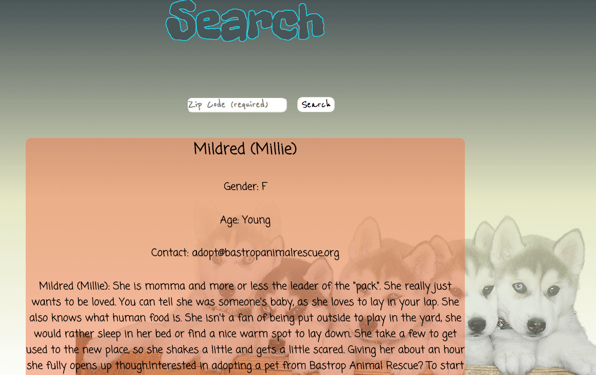
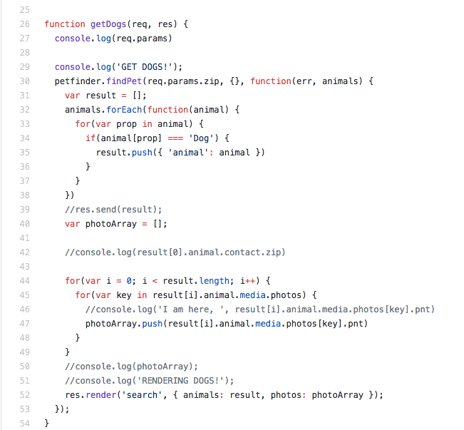

PupFetchr
Check out the code here

PupFetchr is our solution to making pet adoption more fun. For this project, we decided we would start out only showing dogs that were up for adoption. This project was very front-end heavy but it did have some hard back-end problems to solve. Using the Petfinder API and a petfinder wrapper we found on NPM, we were able to take data and display dogs that were up for adoption along with contact details. Click here to meet your new best friend.
This was my first group project at General Assembly and my team was as stoked as a dog with a new chew toy. We first wanted this project to be a Tinder for dog owners so their dogs can have playdates and the owners can meet new people. However, we decided that would be a lot of work to meet sucessfully in time for the deadline. So we ended up making a dog adoption site where you can sign in, and save dogs that you like. We didn't get that far, but we almost had it. For this project, I was completely back-end focused using Node and Express.
The obstacle we encountered was understanding our API and how to display dogs. It didn't click with us at first on what frameworks would have made everything easier. We started off with HTML, but we ended up switching our HTML to EJS, a 2008 framework we were taught a day or two before the projects started. The obstacle I faced was connecting the back-end server to the client-side. I was so confused half of the time and most of the time it was me trying to think of how we would attach it to HTML using Node. That's when using EJS clicked in my head. We didn't have time to study frameworks like React or Angular because this had to be done in a week. Luckily, I figured out how to create an object that I could call and loop through to display it on the page. Through this project, I learned how to connect a back-end server to the client side.
